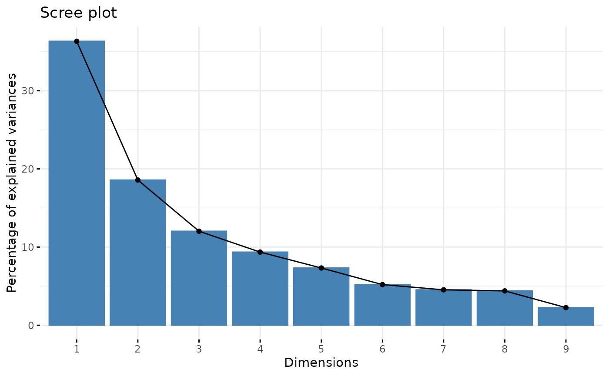
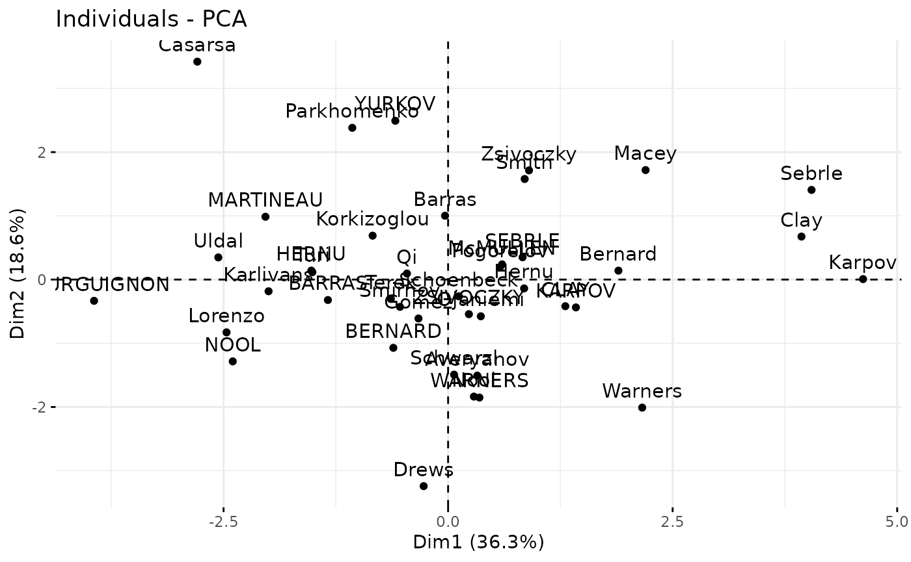
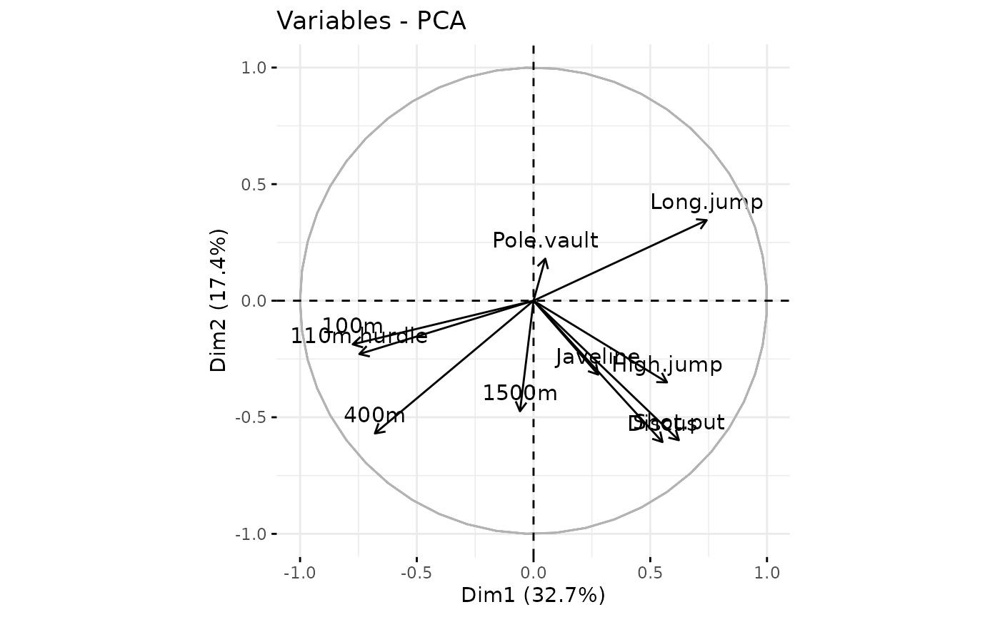

FactoMineR2 is an R package that provides an efficient
and user-friendly way to perform multivariate data analyses.
factoextra was initially designed for
FactoMineR but you can easily use it with
FactoMineR2 for data visualization. This vignette provides
a quick overview of how to use factoextra with
FactoMineR2.
library(dplyr)
library(factoextra)
library(FactoMineR)
library(FactoMineR2)
library(magrittr)
data(decathlon)Eigs
X_sup <- decathlon[, 11:13]
X_active <- decathlon[, -c(11:13)]
### Eigvalues & eigvectors
eigs <- X_active |>
standardize(type = "norm") |>
get_eigen()
df_eigs <- eigs |>
extract(1) |>
as.data.frame() |>
rename(eigenvalue = values) |>
mutate(
`percentage of variance` = eigenvalue / sum(eigenvalue) * 100,
`cumulative percentage of variance` = cumsum(`percentage of variance`)
)
### Individuals
X_active <- X_active |> standardize(type = "FactoMineR", scale.unit = TRUE)
vectors <- X_active |> eigvectors()
ind_coords <- X_active |> pca_ind_coords(vectors)
lst_ind <- list(
coord = ind_coords,
cos2 = ind_coords |> pca_ind_cos2(),
contrib = ind_coords |> pca_ind_contrib(df_eigs$eigenvalue)
)
### Variables
var_coords <- df_eigs$eigenvalue |> pca_var_coords(vectors)
### Summary
lst_var <- list(
coord=var_coords,
cor=var_coords,
cos2=var_coords |> pca_var_cos2(),
contrib=var_coords |> pca_var_contrib()
)
res_pca <- list(
eig = df_eigs,
var = lst_var,
ind = lst_ind,
call = list(scale.unit = TRUE)
)
class(res_pca) <- c("PCA", "list")
fviz_eig(res_pca)
fviz_pca_ind(res_pca)
fviz_pca_var(res_pca)